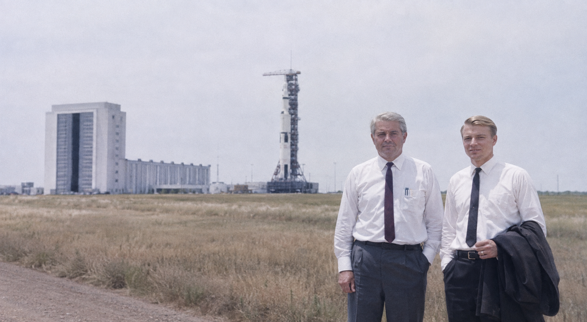

Permanent stations reveal the politics behind each space system. Germany builds an industrial harbor, Japan an associated-state platform, America a traffic-centered modular workplace, and the Latin Space Community a treaty machine whose modules embody reciprocal national dependence.
Orbitaler Raumhafen
Germany publicly commissions the Raumhafen in 1975 in a circular 720-kilometer, five-degree-inclination orbit. Its docks, workshops, fuel storage, assembly areas, reactor power, nonrotating hub, and rotating partial-gravity habitation support heavy spacecraft and lunar logistics.
The station is the mature expression of von Braun's architecture and the physical center of Marsplan 92. Its 1975 live tour produces a second American space shock after the Moon landing.
{kind=link}

Command and life aboard
German is the ordinary operating language. Germans hold integrated-command positions; foreign crews retain autonomy inside national module groups but accept German emergency authority because every module depends on the same structure, traffic control, power, and life-support interfaces.
Commercial and criminal jurisdiction normally follows the responsible module government. Shared danger creates real working camaraderie. The station feels more like an international industrial port under unequal ownership than a military barracks.
Hōrai Orbital Platform
Hōrai grows from the Hikari and Kōbō sequence: uncrewed qualification in 1972, Japanese crewed flight in 1973, rendezvous and docking in 1974, assembly in 1975, occupation in 1976, associated-state crews from 1978, and automated cargo in 1979.
Continuous multinational occupation begins in 1983. Hōrai emphasizes laboratories, robotics, Earth observation, communications, training, automated resupply, and visible participation by associated states. Its robotic-control consoles join the Imperial Deep-Space Network and help supervise the 1984 distributed Mars system. Japanese strategic primacy remains explicit even where crews and research are multinational.
Stella Maris
The Latin Space Community begins construction in 1985 after Aquila I and a decade of uncrewed Concordia work. The station supports astronomy, solar science, materials, communications, Earth observation, and later planning for a farside lunar observatory.
Italian launch and integration, Occitan avionics, Spanish structures and astronomy, and Portuguese tracking and recovery make the complex a physical constitution. Its first continuous-occupation date is not yet fixed.
Four models of permanent orbit
| Feature | Raumhafen | Columbia | Hōrai | Stella Maris |
|---|---|---|---|---|
| Primary role | Heavy industrial harbor | Reusable-traffic workplace | Multinational research platform | Shared scientific complex |
| Key date | Publicly opened 1975 | Continuously occupied 1979 | Continuously occupied 1983 | Construction begins 1985 |
| Command | German integrated authority | American operator and contractors | Japanese primacy with associated participation | Four-state treaty workshare |
| Strength | Mass, power, docks, lunar and Mars logistics | Cadence, repair, retrieval, modular growth | Robotics, standards, coalition legitimacy | Interfaces, science, reciprocal dependence |
Safety, incidents, and Tehran
Stockholm safety rules establish rescue, registration, passivation, debris notification, and controlled disposal. The 1982 Geneva Orbital Incidents Agreement adds transponders, approach notice, station safety zones, hotlines, rescue duties, and protection of life support without demilitarizing orbit.
A Japanese science and robotics module reaches the Raumhafen in 1985 and logistics/life support follows in 1986. The Tehran Concord regularizes this exchange while leaving overall station command German.